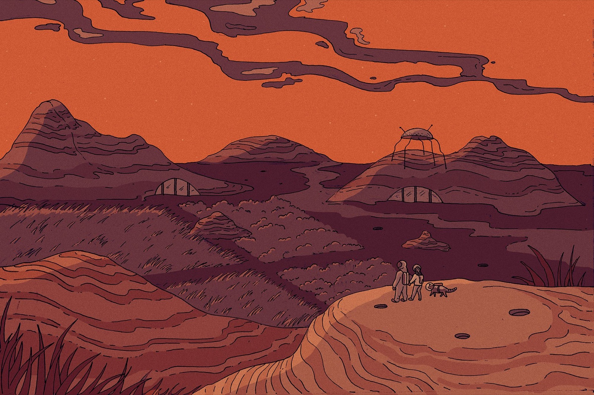
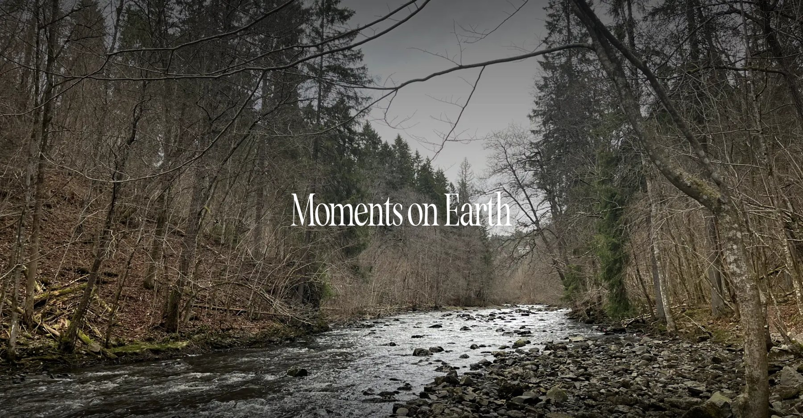
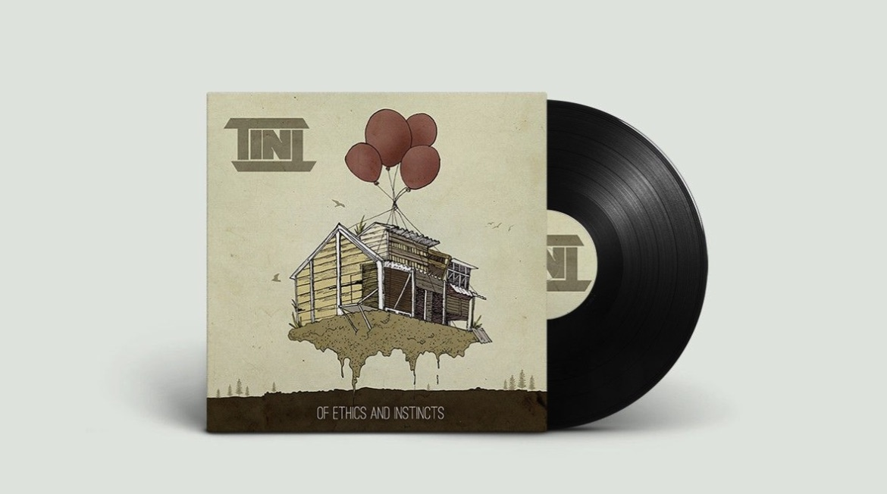

Hi! I’m Saloni Sinha, a multidisciplinary designer based in Oslo, currently working as a Lead Experience designer at frog Oslo.
saloni.jpg
What I do
With 15+ years of experience across digital products, services and experiences, I enjoy taking ideas from ambiguity to reality. I work across the whole design process, from defining problems and shaping product direction to developing concepts, crafting experiences and bringing them to life. I lead teams while staying hands-on, with a constant focus on craftsmanship.
My approach to design
My approach is rooted in empathy, experimentation, visual styling and conceptual thinking. I shape end-to-end experiences that balance user needs, business goals and technical possibilities.
I also help designers and organisations get the most out of AI without losing the human instinct and ethics that good design depends on.
In my free time

You’ll usually find me hiking in the woods with my two-year-old Australian Shepherd, or travelling whenever time and money allow. I like to illustrate for fun, and often share my digital sketches and inked drawings on Instagram.
moments.earth

I also collect travel videos at moments.earth, a side passion project I started with my partner so that anyone can experience moments from around the world, from calm, quiet spaces to busy city life, and contribute their own.
A bit of my background
Since you’ve scrolled this far, here’s a little more about me. I spent most of my life in India as a BRAT (born, raised and transferred), changing more than nine schools and living all across the country.
I moved to Oslo over four years ago to experience Norwegian nature up close, and it has felt like home ever since.
I’m some kind of music buff

I’ve spent most of my life listening to metal, though I’m a lot more open to other genres these days. I make playlists on Spotify.
I’ve also produced electronic music under my moniker Parasighted, and played bass and produced for the synthwave band VST.
Nowadays I’m learning the drums and playing occasionally with a band whose working name is ‘Park’. And yes, I’ve designed quite a few album covers along the way.
I also mentor on ADPlist
On ADPlist you can talk to me, get a review of your portfolio, practise a mock interview, or just discuss a topic you’re curious about.
If you’d like to know more
I’m always happy to meet for a coffee, or you can drop me a line by email.
Say hello